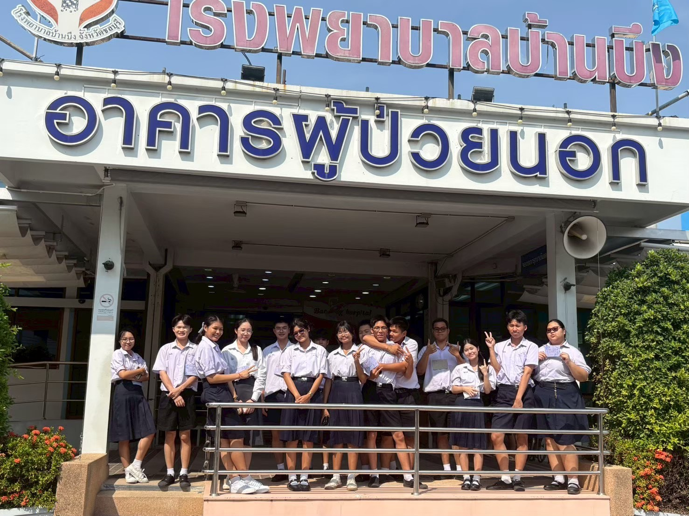
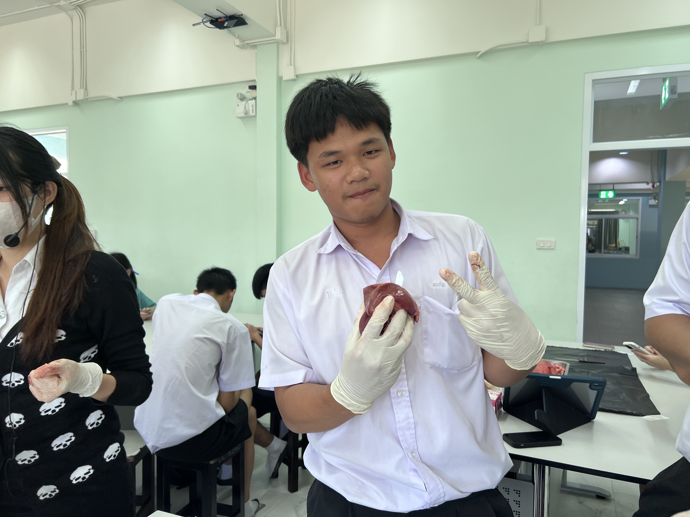
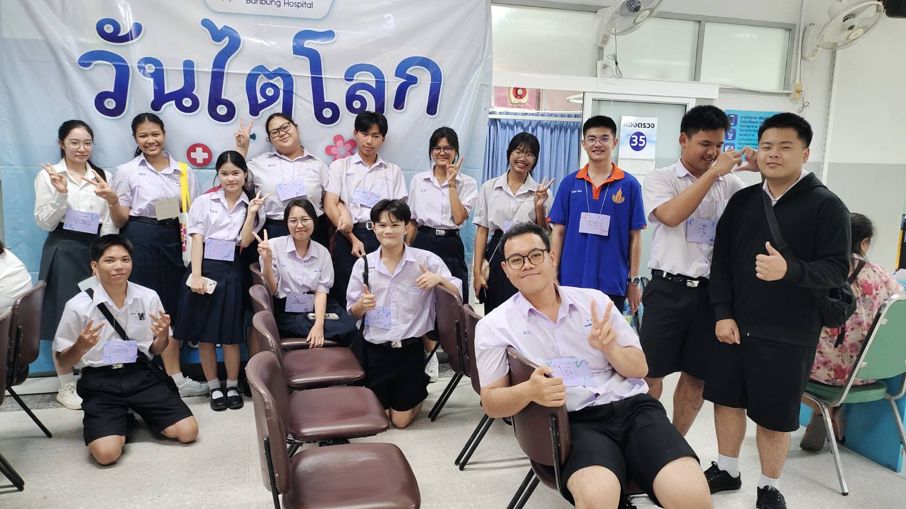

TCAS PORTFOLIO

แฟ้มสะสมงาน (Portfolio)
คณะแพทยศาสตร์ศิริราชพยาบาล มหาวิทยาลัยมหิดล
หลักสูตรแพทยศาสตรบัณฑิต

ความสามารถพิเศษและทักษะเฉพาะทาง

🩺 การปฐมพยาบาลเบื้องต้น & CPR
ผ่านการอบรมการช่วยชีวิตขั้นพื้นฐาน

🧬 ปฏิบัติการวิทยาศาสตร์/ชีววิทยา
ได้มีการฝึกผ่าปอดและหัวใจหมู

🤝 งานจิตอาสาและการทำงานทีม
มีจิตสาธารณะ พร้อมลงพื้นที่ช่วยเหลืองานชุมชนและทำงานร่วมกับผู้อื่นได้อย่างมีประสิทธิภาพ

การรับฟังด้วยความเข้าใจ (Empathy)
มีทักษะการเป็นผู้ช่วยพยาบาลและรับฟังการฝึกสอนจากพยาบาล